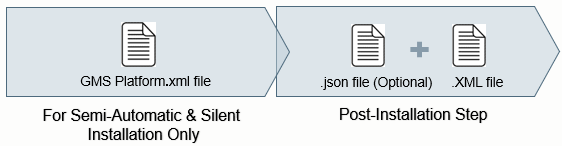

Verify and Enable a Post-Installation Step for Execution
Do the following procedure to verify and enable the post-installation steps such as License Activation, Project Setup and the post-installation steps of other extensions.
- You have reviewed the considerations for executing post-installation steps using custom, semi-automatic and silent installation mode.
- You have configured the post-installation steps in the appropriate sections (GMS and/or EM) of the GMS Platform.xml file and have verified and enabled the GMS Platform.xml file.
For example, for the post-installation step of SMC, AutoProjectStartup, the configuration in the EMs section is:<EM Name="SMC">
<PostInstallationSteps>
<Step Name="AutoProjectStartup" Execute="True"/>
</PostInstallationSteps>
</EM> - The post-installation steps are available at a known path configured in the [GMS/EM]PostInstallationConfig.xml file. This file is available at the path
…\InstallFiles\[GMS/EM]\[EMName]\PostInstallation. During installation of the platform or the extension, the PostInstallation folder is copied to ..\GMSMainProject and the post-installation steps are executed from ..\GMSMainProject\PostInstallation\GMS or ..\GMSMainProject\PostInstallation\EM\[EM Name]. - (Applicable only for the post-installation step of License Activation) The post-installation step of License Activation is configured and available at the path
…\InstallFiles\GMS\PostInstallation. During platform installation, the PostInstallation folder is copied to ..\GMSMainProject and the post-installation steps are executed from ..\GMSMainProject\PostInstallation\GMS\LicenseActivation.
Also, the license file (.lic) file or ActivationID.txt/EntitlementID.txt file containing the IDs is available at the configured license path: [Installation Drive:\GMS\Licenses]. - (Applicable only for the post-installation step of Project Setup) The post-installation step of Project Setup is configured and available at the path
…\InstallFiles\EM\SMC\PostInstallation. During the installation of SMC, the PostInstallation folder is copied to ..\GMSMainProject and the post-installation step is executed from ..\GMSMainProject\PostInstallation\EM\SMC.
You have reviewed the considerations, verified the project backup is available at the configured backup path: [Installation Drive:\GMS\Backups]. - (Applicable only for the post-installation step of other supported extensions): The post-installation steps, of extension, if available, is available at the path
…\InstallFiles\EM\[EMName]\PostInstallation is configured, verified. During installation of the extension, the PostInstallation folder is copied to ..\GMSMainProject and the post-installation step is executed from ..\GMSMainProject\PostInstallation\EM\[EM Name].
For considerations for post-installation steps of extensions, see the extension post-installation sections.
- Modify the [GMS/EM]PostInstallationConfig.txt file by changing the extension from .txt to .xml for each post-installation step that you to be executed.
- The [GMS/EM]PostInstallationConfig.xml file is enabled for execution.
- Install the Setup type - Server using the custom, semi-automatic, silent installation mode.
- Depending on the installation mode, and the
Executetag values in GMS Platform.xml file and the [GMS/EM]PostInstallationConfig.xml file, the PostInstallation Selection dialog box may or may not display listing the configured post-installation steps. - After the successful installation the configured post-installation steps are executed successfully and the logon dialog box displays.
- In the Desigo CC Client application logon dialog box, after entering the current user name and password for the very first login, you are prompted to change the password.
You also need to configure the root user password, once you login, using Users application.
Overview of Post-Installation Steps
To simplify some routine tasks performed by the commissioning engineer, related to license activation, project engineering and some extended feature task supported by some extensions, the Installer can be configured to refer to a pre-configured post-installation file, which when executed as a part of installation process, performs these tasks according to the parameters configured in the post-installation configuration file.

The post-installation step configured in the [GMS/EM]PostInstallationConfig.xml file may refer to a post-installation [PostInstallationStepName].json file, which provides some additional parameters along with their values to the post-installation step file for execution.
- [GMS/EM]PostInstallationConfig.xml file allows to enable the execution of the step and specify in which way execution will take place.
- [PostInstallationStepName].json file allows to configure the parameters related to a specific step. There are post-installation steps where no configuration file is required.

NOTE:
The modification of [GMS/EM]PostInstallationConfig.xml or is [PostInstallationStepName].json file typically done by librarian / distribution manager. Occasionally a Commissioning Engineer can also edit the .json configuration file.
For information on how to configure the [GMS/EM]PostInstallationConfig.xml or is [PostInstallationStepName].json file, see Librarian and Distribution document. (A6V11643840)
You can run the post-installation step as a part GMS/EM during the process of new installation or as part of management station upgrade, or as a part of only extension upgrade, or as a part of new extension installation with the same version as that of the installed management station. Furthermore, during the new installation if the post-installation step fails and the value of the attribute RetryOnFail is set to True, you can re-run the failed post-installation step by running the setup exe.
During custom/semi-automatic installation, all the enabled post-installation steps of management platform (GMS) and/or extension (EM), display as selected for execution in the Post-Installation Selection dialog box and get executed.
In case of semi-automatic or silent installation, a preconfigured GMS Platform.xml file, containing the post-installation steps of management platform (GMS) and/or extension (EM) are referred to.
The post-installation steps, when executed, simplifies the routing configuration tasks. Thus helping in reducing the commissioning time. Configuring the post-installation steps for the extensions also reduce the time spent setting up the system with these extended feature of Desigo CC .
Since the installation and post-installation takes care of the installation along with project engineering tasks, you are ready to log into the Desigo CC Client application and start directly with the engineering tasks.
Supported Post-Installation Steps on the Setup Type - Server
- License activation (GMS)
- Project restore and upgrade (mandatory extension SMC)
- HDB creation (mandatory extension SMC)
- LTS creation (mandatory extension SMC)
- Linking HDB to project (mandatory extension SMC)
- Website creation (mandatory extension SMC)
- Web application creation (mandatory extension SMC)
- Project activation and startup (mandatory extension SMC)
- Client application startup (mandatory extension SMC)
Additional supported post-installation steps of some extensions on the setup type – Server, Client/FEP include:
- AddSWInstallation
- TemplateSynchronization
- Extension web application creation, if configured for an extension
Common Considerations for Post-Installation Steps
You must verify the following considerations before executing the post-installation steps using custom, Semi-automatic or silent installation:
- New or existing Desigo CC, standalone Server system with any of the Desigo CC supported Windows OS installed.
- No changes must be done in the registry after the Windows installation.
- WindowsErrorReporting must be disabled on your machine. You can check the status of WindowsErrorReporting by running the
powershell Get-WindowsErrorReportingcommand in the command prompt opened using administrative privileges. This command returns the status as Enabled or Disabled. - To disable WindowsErrorReporting, run the
powershell Disable-WindowsErrorReportingcommand. This command returns True, if the operation is successful and False in case of failure. - To enable WindowsErrorReporting after completion of post-installation steps, run the
powershell Enable-WindowsErrorReportingcommand. - No prerequisite of Desigo CC including the SQL Server is installed on the computer where you are going to execute the post-installation steps. This is applicable for the tag
Precondition = Fresh_Machine. - The extension for which the post-installation steps are to be executed is consistent and available in the distribution media. A mandatory extension and its parent extension (mandatory/non-mandatory) is always installed and added to the project during installation/upgrade of the management platform itself or the project.
- The post-installation steps are available at a known path configured in the [GMS/EM]PostInstallationConfig.txt file. The [GMS/EM]PostInstallationConfig.txt file is available at the path
…\InstallFiles\EM\[EMName]\PostInstallation.
During installation of the platform or extension, the PostInstallation folder is copied to ..\GMSMainProject and the post-installation steps are executed from ..\GMSMainProject\PostInstallation\GMS or ..\GMSMainProject\PostInstallation\EM\[EM Name]. - Only the valid, enabled (changed extension from .txt to .xml) and selected post-installation steps are executed during the installation.
- The
<PostInstallationSteps>section of the GMSPlatform.xml file must be configured for the post-installation step for whichExecute = AskUsertag value is configured in the [GMS/EM]PostInstallationConfig.xml file. - For example, for the post-installation step of SMC, AutoProjectStartup, the configuration in the EMs section is:
<EM Name="SMC">
<PostInstallationSteps>
<Step Name="AutoProjectStartup" Execute="True"/>
</PostInstallationSteps>
</EM> - (Applicable only for custom installation) Only those post-installation steps for which
Execute = AskUseris configured in the [GMS/EMPostInstallationConfig.txt]are displayed as selected in the PostInstallation Steps Selection dialog box. Forthe attribute valueExecute = Alwaysconfigured in the [GMS/EMPostInstallationConfig.txt]file, the steps are directly listed in the Ready to Install the Program dialog box. - (Applicable only for semi-automatic installation) Only those post-installation steps for which
Execute = AskUseris configured in the [GMS/EMPostInstallationConfig.txt]andExecute = Trueconfigured in the<PostInstallationSteps>section ofGMS Platform.xmlfileare displayed in the PostInstallation Steps Selection dialog box. The post-installation steps that have the valueExecute = Alwaysconfigured in the[GMS/EMPostInstallationConfig.txt]is directly listed in the Ready to Install the Program dialog box for execution. In case of semi-automatic installation, the PostInstallation Steps Selection dialog box displays only when there is any inconsistency in the [GMS/EM]PostInstallationConfig.xml file, for example if the mandatory tags such asCommandis empty or missing and the Step Name is configured in the GMSPlatform.xml file. - (Applicable only for silent Installation) Only those post-installation steps having
Execute = AskUserin the [GMS/EMPostInstallationConfig.txt]andExecute = Trueconfigured in the<PostInstallationSteps>section ofGMS Platform.xmlfileorhavingExecute = Alwaysconfigured in the [GMS/EMPostInstallationConfig.txt]are considered for execution during post-installation step execution using silent installation. - (Applicable only when upgrading the management station or an extension, language pack or a prerequisite), Only those post-installation steps having the following parameters are considered during the upgrade:
- Only those post-installation steps that have the value for the attribute
PreConditions = “None”orPreConditions = “”and for the attributeInvolvedInUpgradeWorkflow = AskUser/Alwaysconfigured in the [GMS/EMName]PostInstallationConfig.xml file are considered for the execution of post-installation steps of the platform or extension which is upgradable. - If the tag value is
PreConditions = “Fresh_Machine”, then a warning message displays in the Welcome to the Upgrade Wizard dialog box and the post-installation step is not listed in the PostInstallation Step Selection dialog box and not executed. - (Only for custom and semi-automatic upgrade) The post-installation steps that have the attribute value
InvolvedInUpgradeWorkflow = AskUserare displayed in the PostInstallation Steps Selection dialog box whereas, the post-installation steps that have the attribute valueInvolvedInUpgradeWorkflow = Alwaysare directly listed in the Ready to Install the Program dialog box. In semi-automatic upgrade the PostInstallation Steps Selection dialog box displays only when any inconsistency is mentioned in the post-installation step present in the GMS Platform.xml file. - (Applicable only for the execution of post-installation steps of the new extensions to be installed during the management station upgrade or extension using the Update icon.)
- Only those post-installation steps that have the value for the attribute
PreConditions = “gNone”orPreConditions = “”and for the attributeExecute = “AskUser/Always”configured in the [GMS/EMName]PostInstallationConfig.xml file are considered for the execution of post-installation steps. - If the tag value is
PreConditions = “Fresh_Machine”, then the post-installation step is ignored. - The post-installation steps that have the attribute value
Execute = “AskUser”are displayed in the PostInstallation Steps Selection dialog box whereas, the post-installation steps that have the attribute valueExecute = “Always“are directly listed in the Ready to Install the Program dialog box. - For an extension, whose post-installation steps have failed during the installation, and are applicable for extension upgrade, then during the extension upgrade process the previously failed post-installation steps are completely ignored and the new post-installation steps are considered for execution. If no post-installation steps are available with the upgradable extension, then no post-installation steps are executed.
- (Applicable for post-installation steps that are configured as RetryOnFailed = Yes) If the post-installation step is failed during its execution then during the re-run the failed post-installation steps are considered for re-execution. For the failed post-installation step of an extension, you can execute the failed post-installation steps using the Update icon or by manually running the Setup.exe. For the post-installation step of License Activation (management platform), you can only re-run it using the Setup.exe.
Execution of Post-Installation Steps Based on the Execute Tag Value
The following table shows all the combinations of post-installation step configured for Execute tag:
Value of Execute tag in the | Value of Execute tag in the GMSPlatform.xml File | Result During Installation Process |
AskUser | True | Semi-automatic Installation: The step is considered for execution and displays in the Ready to Install the Program dialog box. |
AskUser | False | Semi-automatic: The step is excluded from the execution and does not display in the Ready to Install the Program dialog box. |
Always | True | Semi-automatic Installation: The step is considered for execution and displays in the Ready to Install the Program dialog box. |
Always | False | Semi-automatic Installation: The step is considered for execution and displays in the Ready to Install the Program dialog box. |
Post-Installation Step of License Activation (GMS)
The post-installation step of LicenseActivation is next logical step be executed after the installation of the Desigo CC Server.
It supports the activation of .lic dongle certificate files for dongle-based licenses and Activation IDs/Entitlement IDs for trusted store licenses.
Considerations for Post-Installation Step: License Activation
- The post-installation step of License Activation is configured and available at the path
…\InstallFiles\GMS\PostInstallation. During Platform installation, the PostInstallation folder is copied to ..\GMSMainProject and the post-installation step of license activation is executed from ..\GMSMainProject\PostInstallation\GMS\LicenseActivation. - The dongle certificate license file (.lic file) for activating the license is available at the configured LicensePath: [Installation Drive:\GMS\Licenses].
For more information on how to generate the dongle certificate (.lic file), refer to the LMU help topic Dongle certificate return. Do not forget to plug in the corresponding dongle to the Desigo CC Server computer after .lic file activation to work with Desigo CC Client in Normal/Engineering license mode. - You must have the EntitlementID.txt file for activating one or more licenses included in the entitlement at once or ActivationID.txt for activating the specific licenses separately is available at the configured LicensePath: [Installation Drive:\GMS\Licenses].
- This step must be configured in the GMSPostInstallationConfig.xml file for post-installation step execution using custom, semi-automatic or silent installation.
- Additionally, for semi-automatic and silent installation, you must configure the License Activation step in the
<PostInstallationSteps>section of the<GMS>section in the GMS Platform.xml file. - As a next step, you need to enable the License Activation step by changing the extension from .txt to .xml for the GMSPostInstallationConfig.txt file.
- Once enabled, it allows you to activate one or more licenses without using the LMU (License Management Utility).
Post-Installation Step of Project Setup (SMC)
The post-installation step of AutoProjectStartup is the next logical step after the License Activation.
This step must be configured in the SMCPostInstallationConfig.xml file located at the path
…\InstallFiles\EM\SMC\PostInstallation for custom, semi or silent installation. During installation of SMC, the PostInstallation folder is copied to ..\GMSMainProject and the post-installation step of project setup is executed from ..\GMSMainProject\PostInstallation\EM\SMC. Additionally, for semi-automatic and silent installation, you must configure this the PostInstallationSteps section in the GMS Platform.xml file.
When configured and enabled (modified the extension from (txt to .xml) it enables the automatic project startup. During the execution of this step, the Installer restores a project template or a project backup from the specified backup path, upgrades a project if required. It also creates an empty History Database with or without Long Term Storage and links the HDB to the project, activates and starts the project. It also creates a new website/web application user (local user who is a member of the IIS_IUSRS group) and a default self-signed certificate that is used to secure the communication between the Windows App client and the Web (IIS) Sever. After the successful web application creation, it provides the web application URL that you can use for launching the Windows App client.
Once this post-installation step is executed, the logon dialog box displays for specifying the user credentials.
Considerations for Post-Installation Step: Project Setup
- Major version of Windows PowerShell > = 5.1
Verify the Windows PowerShell version before proceeding with the automatic project startup. If it is < 5.1, you must install the latest Windows updates, which in turn update the Windows PowerShell version.
Alternatively, you can download the latest updates for Windows Management Framework that in turn internally updates the Windows PowerShell version.
For more information, see Verifying and Updating the Windows Management Framework 5.1 in Additional Installer Procedures. - The project backup is available at the backup path specified in the AutomaticProjectConfiguration.json file
[$InstallDrive\\GMS\\Backups\\]
For example,$InstallDrive\\GMS\\Backups\\ServerProject1 - For creating LTS, the value of the attribute
CreateArchivesis set toTrue. - In order to provide the user credentials on the logon dialog box that displays after the Project Setup completion, you have acquired the user credentials for the project backup/template you want to restore using the post-installation step – Project Setup.
- Applicable only for the WebsiteConfiguration:
- You must have IIS installed on the Server computer.
- You have removed the Default IIS Website in IIS Manager.
- The project with which you are linking the web application must have the Web Communication (CCom port) as either
SecuredorLocal. If the Web Server Communication isDisabled, the Windows App Client does not work.
In this case using SMC, you must manually edit the project and change the Web Server Communication to eitherSecuredorLocaland then align the Web application before launching the web application URL. - The website user configured in the AutomaticProjectConfiguration.json file for Project Setup is created, if not already present. There is only a password prompt for existing, already configured website users (local/domain).
- (Applicable only for the management station in-place upgrade or the upgrade of SMC extension) In the AutomaticProjectConfiguration.json file, you have configured the following attribute values:
- ProjectName: The name of the existing project that you want to upgrade.
For example, if the name of the existing Project is CustomerProject1, then the value of the attribute must be configured as"ProjectName" : "CustomerProject1". - ProjectPath: The path where the existing project is created.
For example, if the existing project is located at the path [Installation Drive]:\[ Installation Folder], then the same path must be configured. If you provide a different path, an error message displays mentioning that the configured project is not available at the configured path. - DatabaseName: The name of the existing HDB that you want to upgrade.
- WebsiteName: The name of the existing website that you want to upgrade.
- WebApplicationName: The name of the existing application that you want to upgrade.
The post-installation step for the website/web application user whose password has changed or expired gets failed.